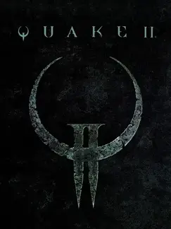

 |
|
| Tiempo de juego | 13m 35s |
| Última actividad | 11/12/2025 15:55:28 |
| Añadido | 26/4/2025 1:40:24 |
| Modificado | 10/12/2025 13:51:43 |
| Estado de finalización | Jugado |
| Librería | Playnite |
| Fuente | |
| Plataforma | PC (Windows) |
| Fecha de lanzamiento | 9/12/1997 |
| Puntuación de la Comunidad | 83 |
| Puntuación de la Crítica | |
| Puntuación de usuario | |
| Género | Shooter |
| Desarrollador | Hammerhead id Software |
| Editor | Activision Hyperion Entertainment Macmillan Digital Publishing TecToy |
| Característica | Co-Operative Multiplayer Single Player |
| Enlaces | 🌟Quad Damage |
| Tag | |
La Tierra está en guerra. Una raza alienígena cibernética y brutal ha invadido, y la única respuesta posible es llevar la lucha hasta su propio planeta. Sos un marine en una misión desesperada, parte de una contraofensiva para adentrarte en el corazón de su máquina de guerra y detener a su líder.
Es acción FPS rápida y sin pausa. Acá no hay tiempo para esconderse mucho; tenés que estar en constante movimiento, dominar un arsenal poderoso y navegar por niveles que son más que simples laberintos (tienen objetivos que cumplir). Es una sensación de ser un soldado solitario enfrentándose a un ejército mecánico masivo.
El mundo alienígena es oscuro, industrial, metálico y opresivo. Sus habitantes son una mezcla grotesca de carne y metal, y cada paso te adentra más en la pesadilla de su complejo militar-industrial. Este juego sentó bases importantísimas para el multijugador competitivo en su momento, pero su campaña individual es una experiencia intensa y brutal que te sumerge de lleno en una guerra implacable.
Un clásico del FPS sci-fi que te desafía a sobrevivir y destruir desde adentro.
• y2quake Engine + HD Mod
• Accedes a ellas con los Accesos Directos dentro de la carpeta del juego.